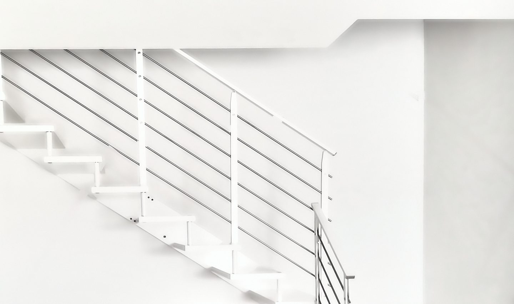
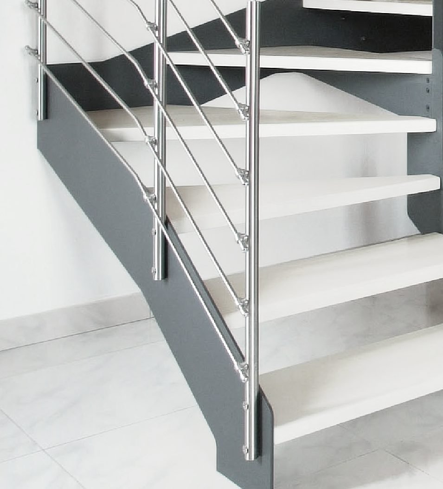
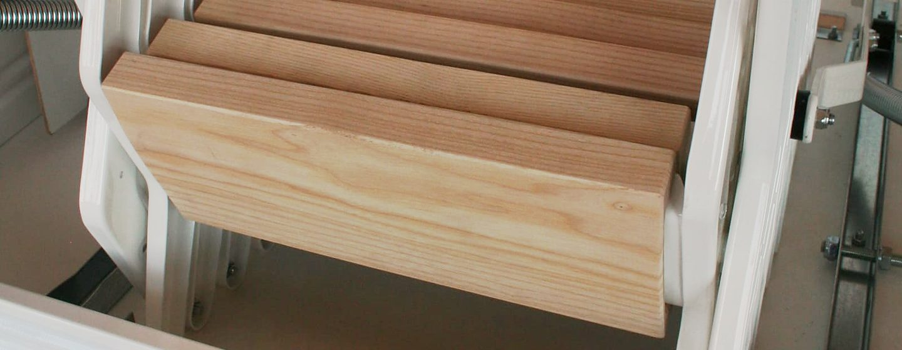
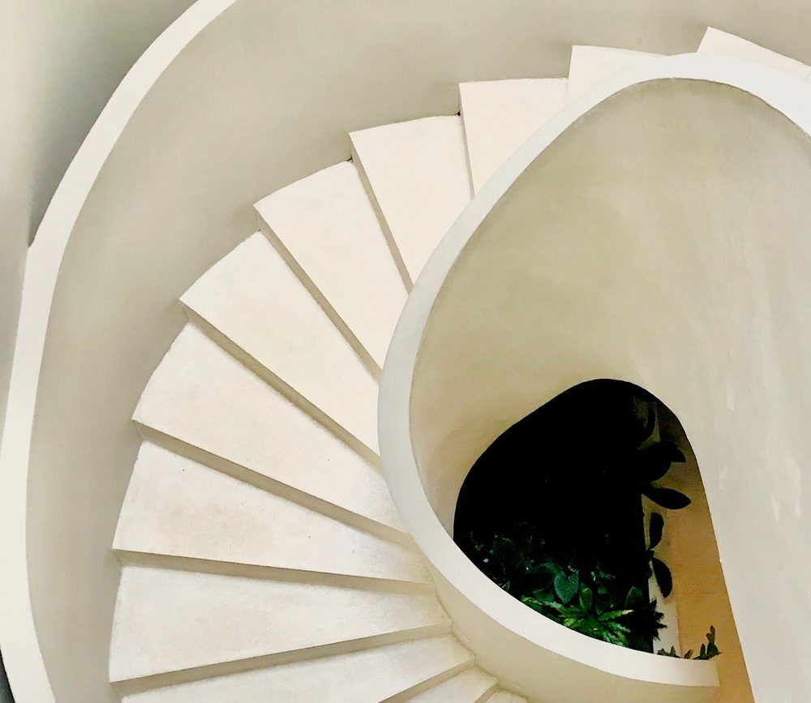

Scale a misura
Scale da interno in acciaio e legno, progettate, prodotte e posate da noi, e scale retrattili per la soffitta. Ogni scala nasce dalle misure del foro e della stanza.
Montreal a L in acciaio verniciato bianco, con la fascia da 8 mm.
Negozio e showroom sulla statale 11 Padova-Vicenza
Da due generazioni disegniamo scale da interno sul foro e sulla stanza, una per una: a giorno, a rampa, elicoidali, a chiocciola, con ringhiere in acciaio o in vetro.
Le retrattili, in magazzino o fuori misura, partono ogni giorno.

Scale da interno, una per casa
Una scala unica, a misura e personalizzata, e su richiesta su vostro disegno. Strutture in acciaio, gradini in legno da 40, 50 o 60 mm, posa in opera della nostra squadra.
- Montreal
- doppia struttura a fascia, spessore 8 mm
- Toronto
- a fascia singola
- New York
- doppia struttura laterale sagomata a zeta, lamiera tagliata al laser
- Boston
- doppia struttura portante a cremagliera
- Londra e Parigi
- a chiocciola, diametro da 110 a 160 cm
- Elicoidali
- foro nel solaio da 100 cm, meglio 130 o 140
- A pedata alternata
- pendenza 60°, 200 cm a terra per salire di 300
- Ringhiere in vetro
- extrachiaro 8+8 con filo lucido, ancoraggi in acciaio
Scale retrattili per la soffitta
Pronte in magazzino, di solito consegnate in 5 giorni lavorativi; fuori misura in 2-6 settimane. La linea PLUS è verniciata di bianco, cornice, telaio e struttura, con pannello da 18 mm (27 nella coibentata).

Dove va il foro?
- Foro
- da 45 × 70 a 80 × 100 cm
- Altezza
- 300 cm, altre a richiesta
- A terra
- 140 cm, 170 per aprirla
A pantografo o a quattro elementi. Anche motorizzata, 220 volt e telecomando: si apre in 20 secondi.
Nel negozio online da 238 euro più IVA
- Foro
- da 50 × 80 a 80 × 100 cm, o su misura
- Altezza
- 300 cm, altre a richiesta
- A terra
- 140 cm, 170 per aprirla
Per le aperture verticali. La portina ruota di circa 170° e resta chiusa con il suo peso, senza serratura.
Nel negozio online da 425 euro più IVA
- Foro
- da 60 × 80 a 80 × 100 cm
- Altezza
- 300 cm, solai spessi a richiesta
- A terra
- 140 cm, 170 per aprirla
Per il tetto piano. Coperchio in multistrato e acciaio zincato, con molla a gas, serratura a cremonese e guarnizioni sui quattro lati; gradini di scavalco per uscire.
- Foro
- 70 × 100 cm
- Altezza
- 300 cm, corrimano 100 sopra
- Gradini
- 10 × 35 cm
Si fissa solo al pavimento del soppalco, senza pareti ai lati; all'arrivo due sostegni curvi per salire e scendere.
Tutti i modelli: portata 150 kg, collaudo a 260 kg. Consegna al piano strada con sponda, o posa nostra.
Vieni a vedere la tua scala nel negozio di Mestrino
Via Marco Polo 2, Mestrino (PD), sulla statale 11 Padova-Vicenza
Apri la mappa
Da lunedì a venerdì 9.00-12.30 e 15.00-19.00
Sabato solo al mattino
